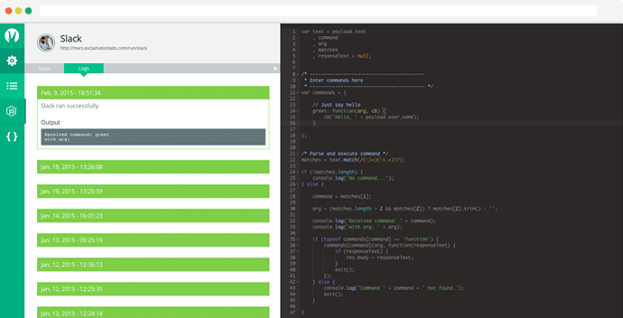

Feed your DevOps. 
Croc is a self-hosted solution for creating complex integrations with various web services using webhooks.
Incoming webhooks trigger user defined Node.js scripts in Croc. Scripts are run in a seperate process and have the full power of Node.js behind them. You can even import core modules as well as third-party modules found on the npm registry.
Features